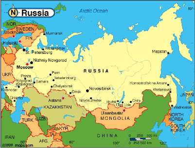

Russia

Overview
Russia is the largest country in the world by area, covering over 17 million square kilometers. It spans Eastern Europe and Northern Asia, sharing borders with 16 countries and stretching across 11 time zones.
Geography and Climate
- Landscape: Russia features diverse environments, from the Arctic Tundra in the north to the Steppes in the south. The Ural Mountains traditionally mark the boundary between European Russia and Siberia (Asia).
- Water Bodies: It contains the Volga (Europe's longest river) and Lake Baikal, which is the world's deepest lake and holds about 20% of the Earth's unfrozen fresh surface water.
- Climate: Most of the country has a humid continental climate, with long, cold winters and short, warm summers.
History
- Early History: Slavic tribes formed the Kievan Rus', which adopted Orthodox Christianity from the Byzantine Empire. After the Mongol invasions, the Grand Duchy of Moscow rose to prominence.
- Imperial Russia: Under Tsars like Peter the Great and Catherine the Great, Russia expanded into a massive empire and a major European power.
- The Soviet Era (1917-1991): Following the Russian Revolution, the Soviet Union (USSR) was established. It became a global superpower, played a decisive role in WWII, and led the Eastern Bloc during the Cold War.
- Modern Era: After the USSR dissolved in 1991, Russia became its legal successor. Since 1999, Russian politics has been dominated by Vladimir Putin.
Government and Politics
- Structure: Russia is a federal semi-presidential republic. The President is the head of state and holds extensive powers, while the Prime Minister is the head of government.
- Administrative Divisions: It is composed of 85 federal subjects (including territories currently under international dispute). The capital and largest city is Moscow, followed by Saint Petersburg.
Economy
- Energy Superpower: Russia possesses the world's largest natural gas reserves and is one of the largest producers of oil. Its economy is heavily reliant on the export of these resources.
- Industry: Other major sectors include mining, agriculture (it is a top wheat exporter), and a highly advanced defense and aerospace industry.
Culture and Science
- Arts: Russia is world-renowned for its literature (Tolstoy, Dostoevsky), classical music (Tchaikovsky, Stravinsky), and the Bolshoi Ballet.
- Space Exploration: The Soviet/Russian space program achieved many "firsts," including the first satellite (Sputnik) and the first human in space (Yuri Gagarin).
- Religion: Orthodox Christianity is the largest religion, though there are significant Muslim, Buddhist, and Jewish populations.
Source: Wikipedia